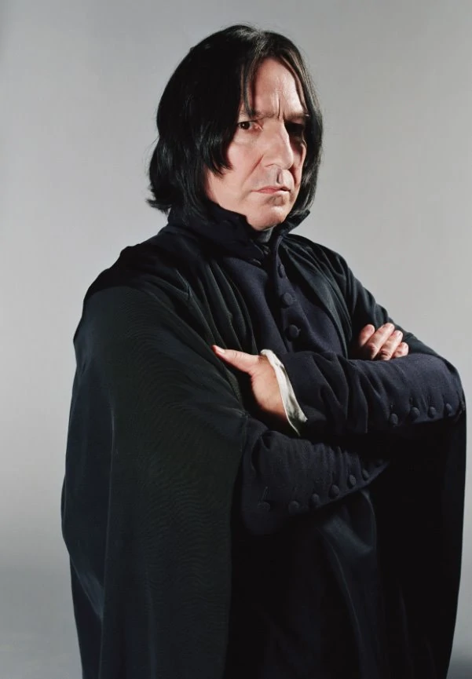
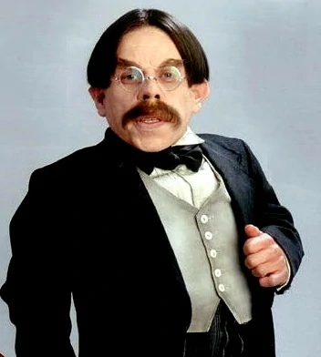
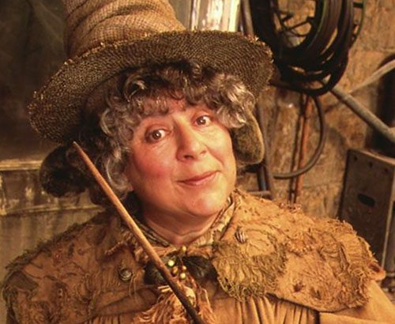
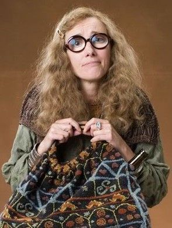
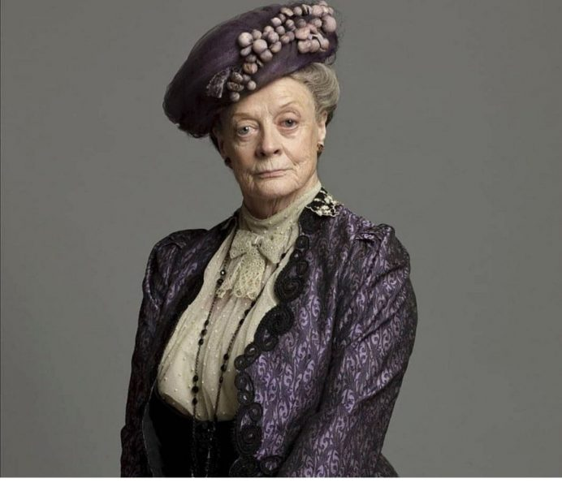
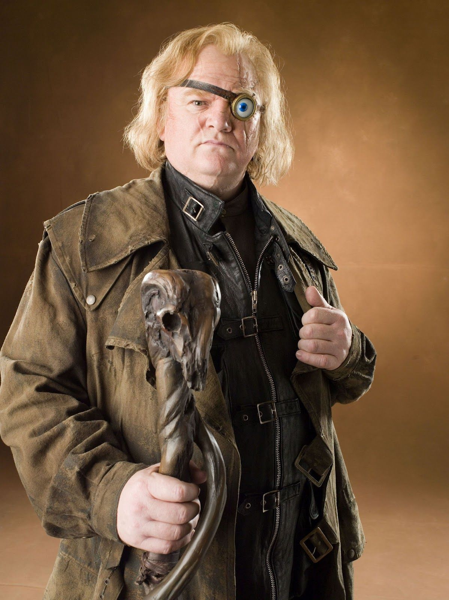

The Headmaster of Hogwarts since a few decades before the creation of The Order of the Phoenix. Centuries of magical events.

Professor Severus Snape
Potions
Head of Slytherin House and a master of potions. Known for his strict discipline and deep knowledge.

Professor Filius Flitwick
Charms
Head of Ravenclaw House and an expert in charms. Encourages students to explore the magic of spells.

Professor Pomona Sprout
Herbology
Head of Hufflepuff House and a knowledgeable herbologist. Guides students in the magical properties of plants.

Professor Sybill Trelawney
Divination
Known for her prophetic abilities and teaches the art of seeing into the future.
Professor Cuthbert Binns
History of Magic
A ghost who teaches the history of wizardry, spanning centuries of magical events.

Professor Minerva McGonagall
Transfiguration
Head of Gryffindor House and a highly skilled witch. Teaches the art of transforming objects.

Professor Alastor
Defence Against the Dark Arts
Moody is appointed as Defence Against the Dark Arts teacher in Harry Potter and the Goblet of Fire (Harry's fourth year at Hogwarts). A former Auror, he gained his nickname for the magical eye he wears to replace one he lost in the line of duty
Professor Charity Burbage
Muggle Studies
She runs afoul of the Death Eaters, whose philosophy asserts the supremacy of pure-bloods.
Professor Dolores Jane Umbridge
Defence Against the Dark Arts
She was appointed by the Ministry of Magic to address the rumors concerning Voldemort's return that extended from there the previous summer.
 Hogwarts University
Hogwarts University